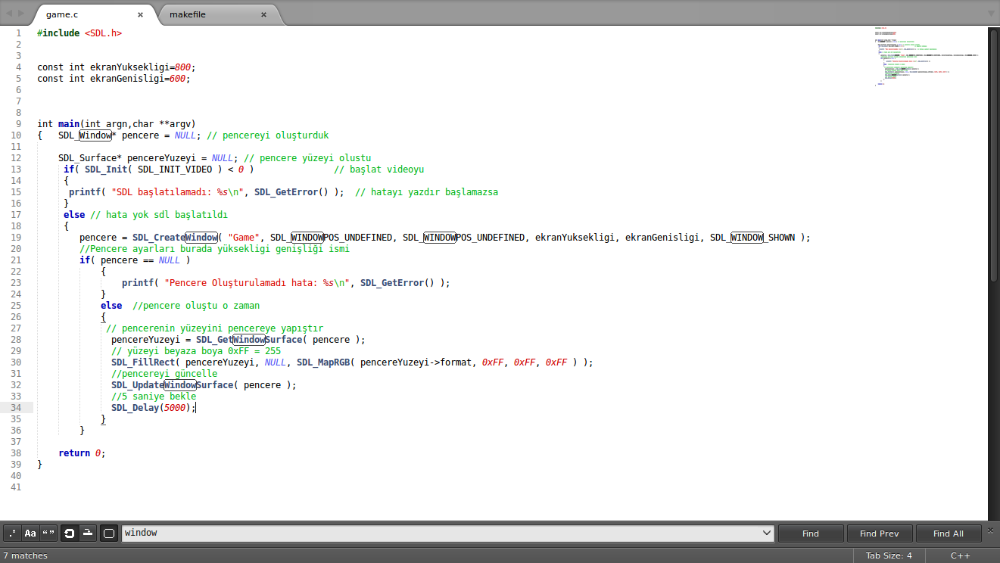
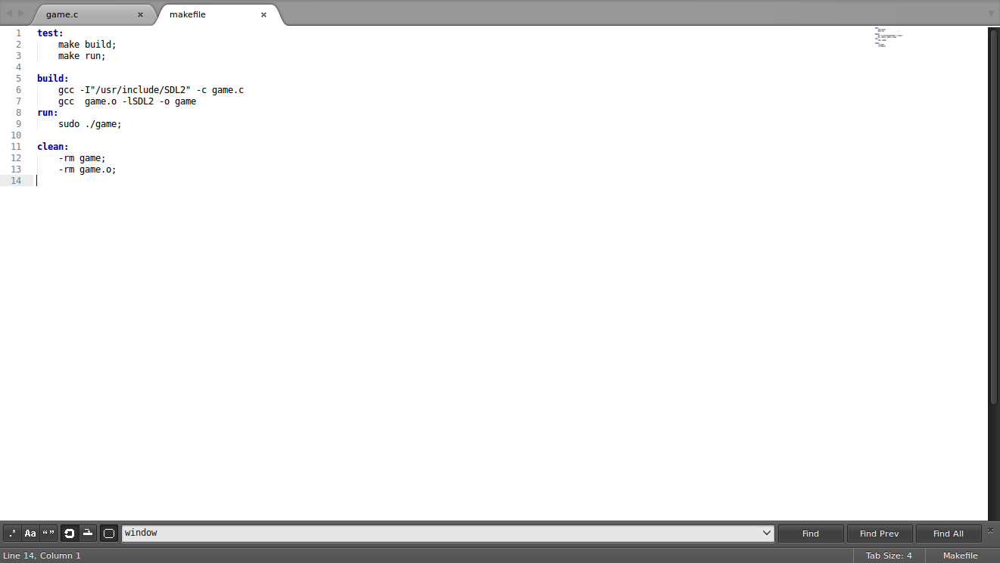
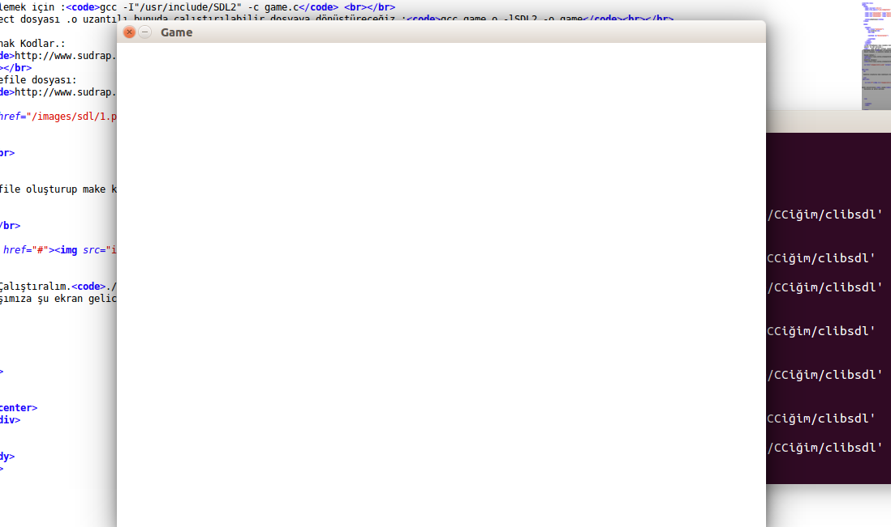

SDL kütüphanesi baya iyiymiş öyle diyorlar.C ile oyun yapmak için birebirmiş.
ubuntu' da sdl kurulumu :
sudo apt-get install libsdl2-dev
Derlemek için :gcc -I"/usr/include/SDL2" -c game.c
Object dosyası .o uzantılı bunuda çalıştırılabilir dosyaya dönüştüreceğiz.:gcc game.o -lSDL2 -o game
Kaynak Kodlar.:
http://www.sudrap.org/paste/text/687991/
makefile dosyası:
http://www.sudrap.org/paste/text/687996/

makefile oluşturup make komutuyla direk derleyip çalıştırmak için.dosya açıp içine bunları yazdıktan sonra . make demek yeterli

Şimdi Çalıştıralım../game yada make
Karşımıza şu ekran gelicek.
